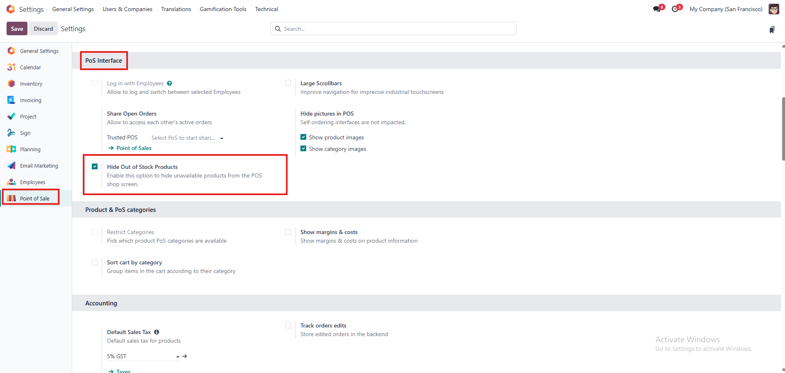
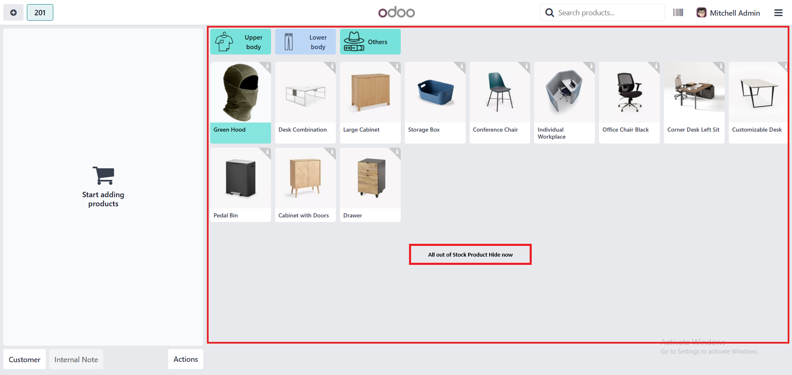
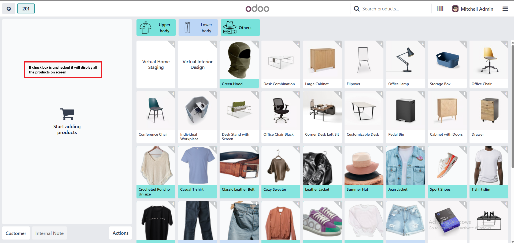

Pos Hide Out Of Stock Product
Hide out-of-stock products on your Odoo POS screen automatically to streamline sales and avoid confusion.
Key Features
- Automatically hides products with zero stock from the POS product list.
- Real-time product availability filtering.
- Works seamlessly with existing POS interface.
- Minimal configuration required.
- Supports both single and multi-location stock setups.
Usage Guide
- Install the module in your Odoo instance.
- In the pos configuration Enable checkbox if you want to display only those product which has in hand quantity more than zero
- Open your POS session products with zero quantity will be hidden automatically on pos screen
No additional configuration is required; the module works out-of-the-box.
- To view hidden products, check the backend Inventory > Products or adjust stock levels accordingly.
Screenshots
1. Setting in the PoS Interface

2. Checked will Hide Out of Stock Products from the product screen.

3. Unchecked will display all the products on product screen.
